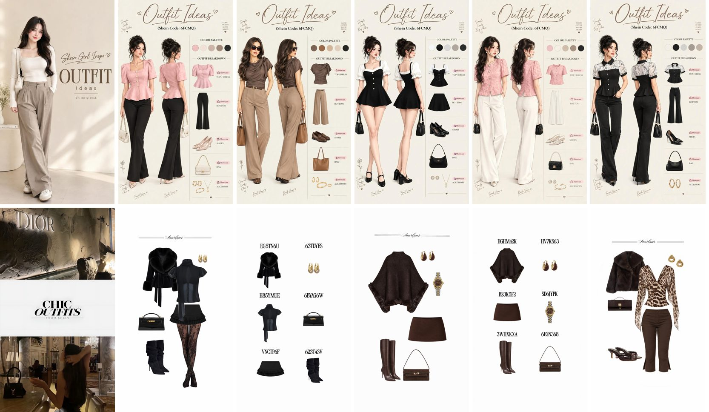

Itlala, the outfit sheets
Concepts for the Itlala redesign, built from the owner's references (the "Outfit Ideas" sheets and flat-lays below) with REAL products and photos from the index. Press "أنشئ الإطلالة" / send, then swipe the deck: cover, flat-lay, outfit sheet, shop the look; switch tiers at the top.
Concept E: MiniMax (chosen direction)The design target for the real app. Best on desktop for now; the phone layout gets rebuilt in the app. Concept E: DeepSeek
Same brief, for comparison.
The references:
